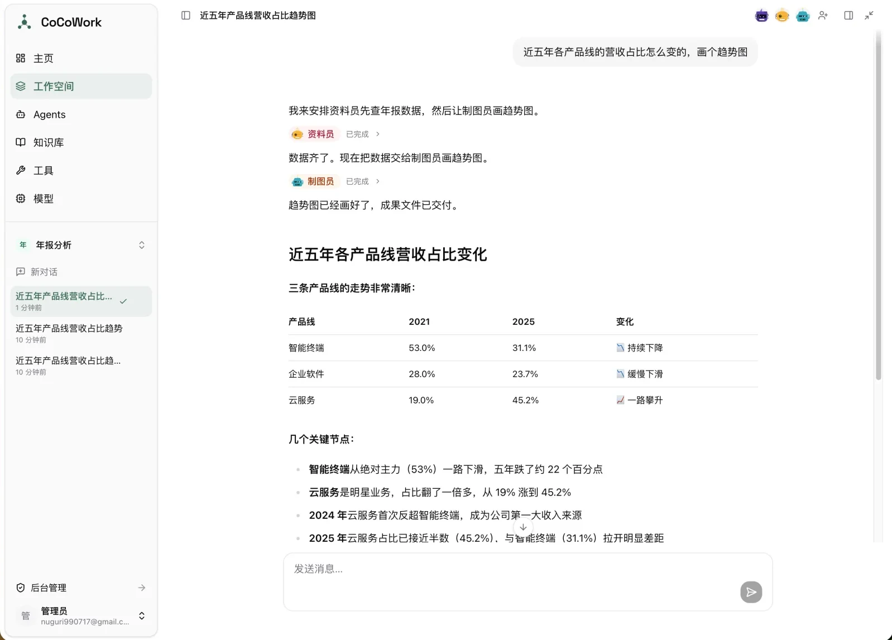
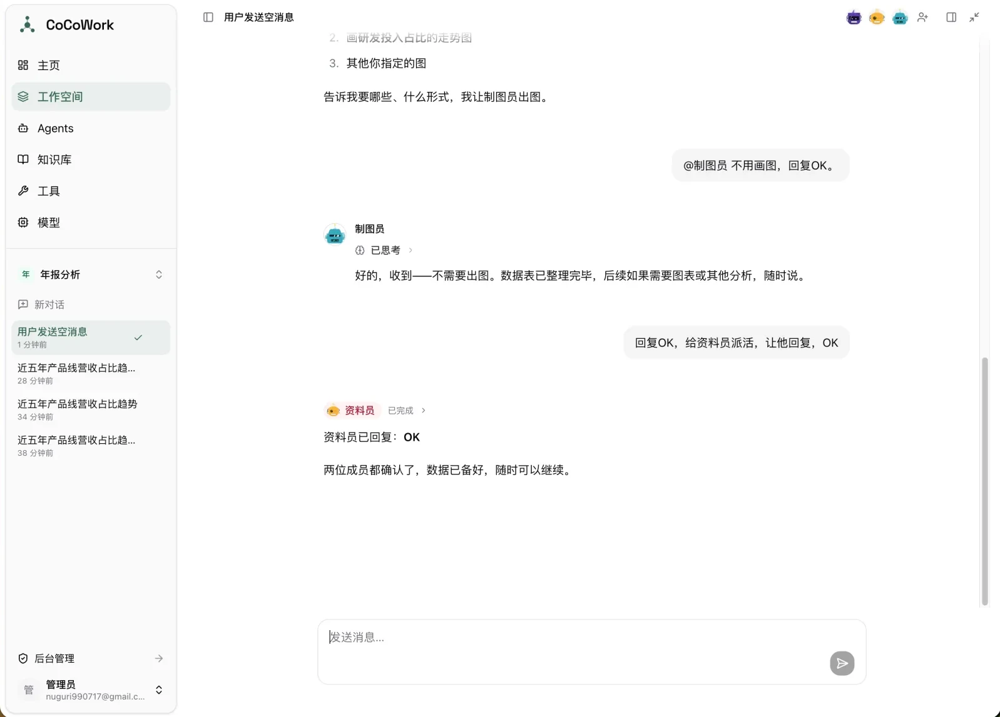
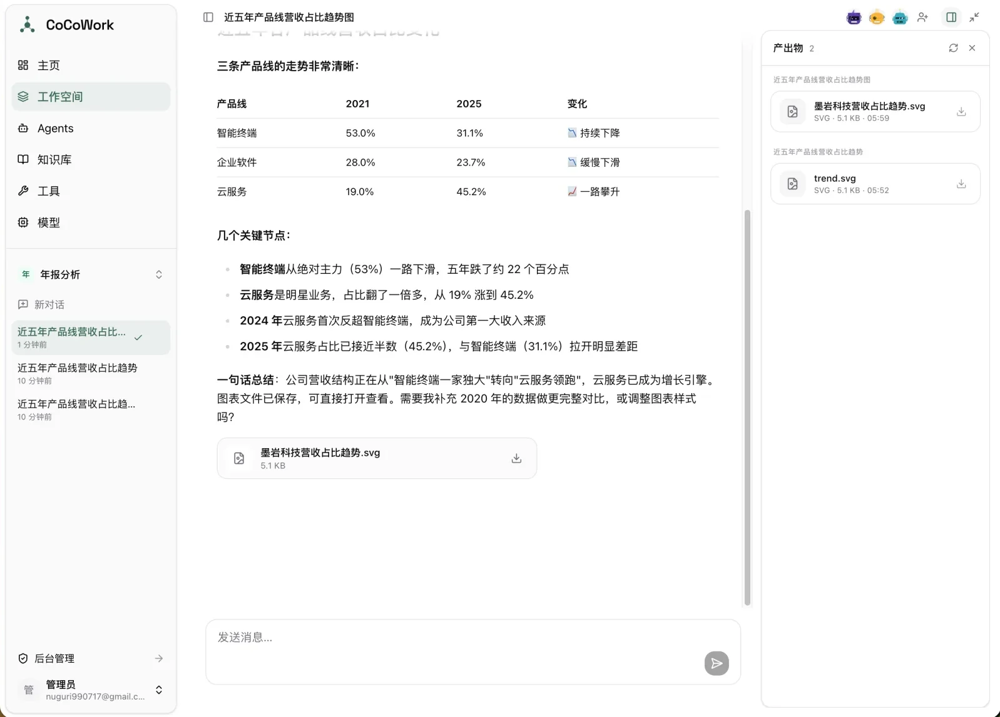
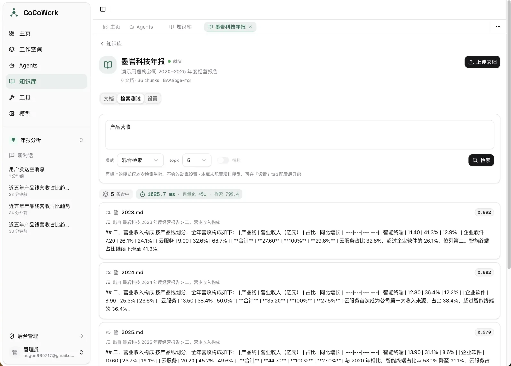
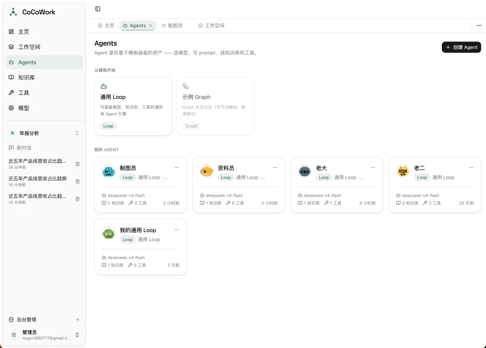

Not just a chatbox.
不是一个聊天框 —— 给它一个需求，它会拆解任务、分派成员、把结果交给你。 整个过程在对话中实时呈现：谁在做什么、进行到哪一步、产出了什么，全程可见。
演示账号 test01 / testcocowork · 开箱即用
围绕协作构建，而非单个助手的问答
多个 Agent 在同一会话内分工，各自带着自己的知识库与技能。
多 Agent 协作
将需求交给管家，由其拆解为若干任务并分派至合适的成员。任务的分派过程与各成员的执行进展在对话中实时呈现，无需预先编排流程或指定执行者。
指定成员应答
通过 @ 可指定某位成员直接应答，跳过管家的调度环节。成员在应答时能够准确识别自身身份、此前的对话脉络以及分派给自己的任务，不会出现张冠李戴。
知识库检索
将文档导入知识库并关联至 Agent 后，Agent 会在需要时自主检索。检索哪个知识库、是否需要多次检索，均由 Agent 在推理过程中自行判断，无需人工指定。
任务执行与产出物
涉及计算、绘图或文件生成的任务，Agent 会实际执行并给出结果。生成的文件归集至「产出物」面板，可跨对话取用，亦可回填至输入框交由其他成员继续处理。
人工确认
执行过程中遇到需要用户决策的环节，Agent 会暂停并给出待确认事项，用户作答后从中断处继续执行。页面关闭后重新打开，待确认事项依然保留。
长期记忆
用户的使用偏好与既定要求会被持续记录，在新的会话与工作空间中同样生效。
实际运行界面





协作发生在工作空间中
理解下面几点即可开始。
基本概念
工作空间对应一个协作场景；管家为默认存在的调度者；成员是由用户招募的 Agent，各自具备不同能力。
两种交互方式
直接发送消息，由管家判断并安排成员执行；使用 @ 指定成员，则由该成员直接应答。
招募成员
于通讯录中招募，成员来源为用户已创建的 Agent。为其关联知识库可获得检索能力，挂载技能可获得执行能力。
执行过程
分派出的任务在对话中逐一展开，成员的执行状态实时更新，完成后标记。
构成本平台的技术
- 后端
- FastAPI · Tortoise ORM · Pydantic
- Agent
- LangGraph · LangChain · deepagents
- 存储
- PostgreSQL + pgvector · Redis · 对象存储
- 异步任务
- SAQ
- 前端
- React 19 · TypeScript · Vite · TanStack Router
- UI
- Tailwind CSS v4 · shadcn/ui · TipTap
- 部署
- Docker Compose · Caddy
- 工具链
- uv · npm
关于体验环境
可使用演示账号 test01 / testcocowork 登录， 其中已配置好可直接查看的示例工作空间；亦可自行注册，注册后需先在「模型」中接入模型方可开始使用。
本站为演示环境，数据可能随时清空，请勿上传任何敏感或重要资料。